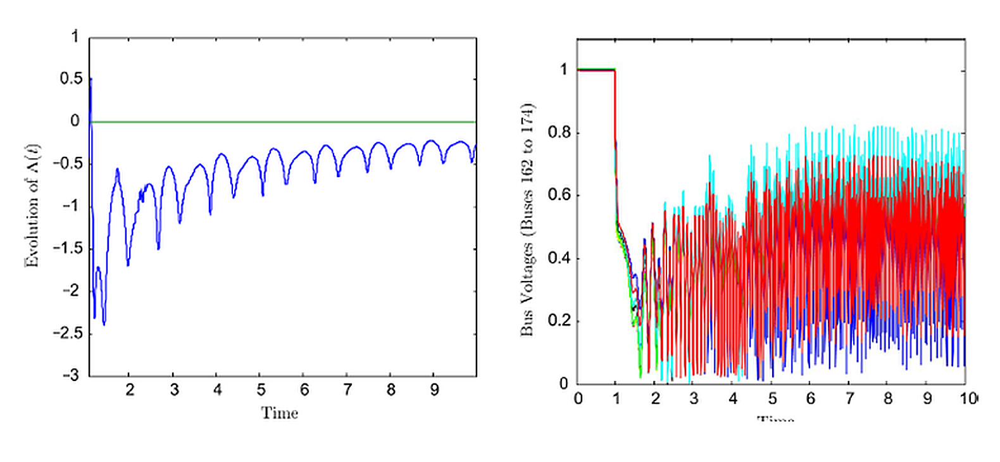
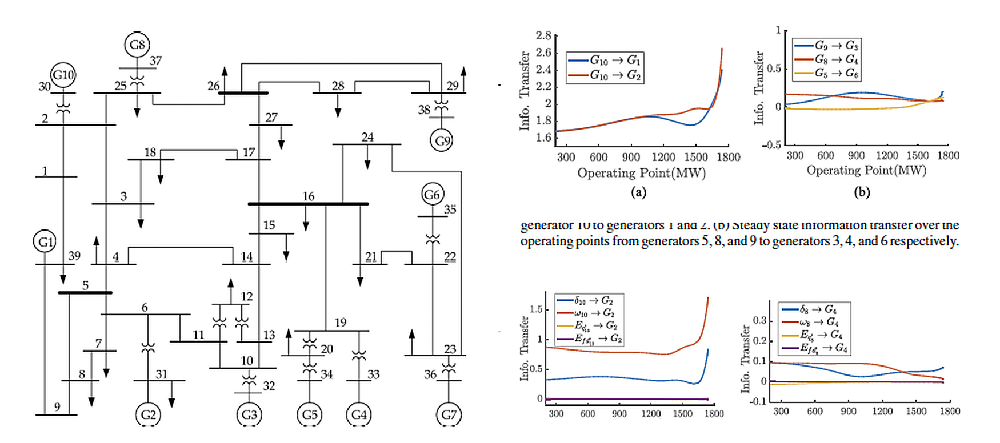
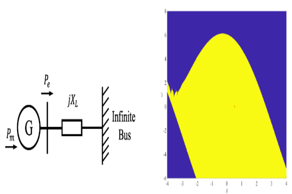
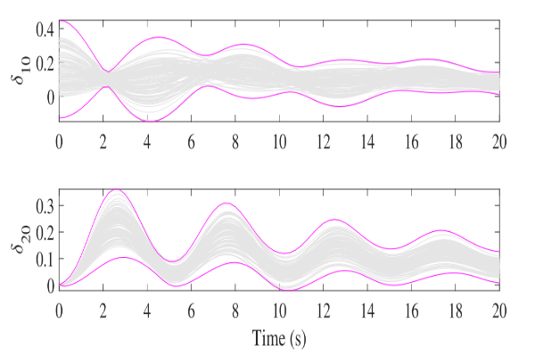

Power Systems: Data-Driven Stability, Uncertainty, and Control
Real-time stability monitoring, information transfer, Koopman spectral analysis, and data-driven stability assessment of modern power networks.
Our research develops mathematical and data-driven methods for analyzing the stability and dynamic behavior of interconnected power systems. Our work encompasses real-time stability monitoring using synchrophasor measurements, information transfer between network components, Koopman operator-based spectral analysis, and uncertainty propagation in nonlinear and stochastic dynamics.
An emerging focus of our research is understanding the impact of distributed energy resources (DERs), inverter-based generation, and rapidly growing data-center loads on power-system voltage and frequency stability. These developments introduce new dynamical interactions, operating uncertainties, and stability challenges that are not always adequately captured by conventional models. We are developing data-driven and operator-theoretic methods to learn these dynamics, characterize their interactions with the power network, and assess stability under changing generation and load conditions.
Together, these research directions aim to provide scalable computational tools for monitoring power-system dynamics, identifying emerging instabilities, understanding network interactions, and supporting the reliable operation of increasingly complex and heterogeneous power systems.
01 / Measurement-based assessment
Real-Time Power-System Stability Monitoring Using PMU Data
Phasor measurement units provide time-series measurements of power-system responses to faults and other disturbances. Our methods use these measurements to assess transient rotor-angle and short-term voltage stability through indicators derived from dynamical systems theory.
Lyapunov-exponent estimates characterize the divergence or convergence of nearby trajectories. Model-free algorithms infer these indicators from measured responses, while entropy-based metrics quantify delayed voltage recovery and help compare contingencies. Studies include large interconnected test networks; measurement noise, communication delay, and the observation window affect practical interpretation.


02 / Directed dynamical influence
Information Transfer and Network Stability
Information transfer measures how the evolution of one state or subsystem influences another. Applied to power networks, it helps identify generators and internal states associated with small-signal instability, complementing mode-based participation analysis.
By examining these directional relationships across operating conditions, we study which interactions become more influential as a network approaches instability. The published analysis considers three-bus and IEEE 39-bus systems, linking changes in information transfer to the dynamics of specific generators and states.


03 / Spectral structure of nonlinear dynamics
Koopman Spectral Analysis of Power-System Dynamics
The Koopman operator describes nonlinear dynamics through the linear evolution of observables. Its eigenvalues and eigenfunctions connect spectral structure to state-space geometry, providing tools for studying stability boundaries and regions of attraction.
Matavalam and collaborators use a unit-eigenvalue Koopman eigenfunction to identify the region of attraction of a post-fault equilibrium and estimate critical clearing time from simulation data. Umathe and Vaidya characterize stable manifolds of boundary equilibria through zero-level sets of Koopman eigenfunctions, with a power-system example demonstrating the connection to transient stability.


04 / Distributions and dynamical response
Stochastic Stability and Uncertainty Propagation
Uncertain initial conditions, disturbances, and operating parameters produce a range of possible power-system responses. We study how this variability evolves, together with stochastic stability questions about the behavior of interconnected systems under random perturbations.
Data-driven approximations of Perron–Frobenius and Koopman operators propagate moments of state distributions through nonlinear dynamics. Related kernel methods represent distributions in a reproducing kernel Hilbert space and learn sparse conditional mean-embedding operators for discrete-time Markovian systems, with approximation-error analysis and power-system examples.
These uncertainty-propagation results support analysis of response variability. They are distinct from proving stochastic stability, and the displayed trajectory envelopes are not asserted to be probabilistic confidence intervals or guaranteed safety bounds.


05 / Ongoing Research
Data-Driven Stability Analysis of DER- and Data-Center-Integrated Power Systems
Modern power systems are undergoing significant changes due to the increasing integration of distributed energy resources (DERs), inverter-based generation, and large-scale data centers. Unlike conventional generation and load models, these emerging resources introduce new dynamical characteristics, fast control interactions, and uncertainties that can significantly influence voltage and frequency stability.
Our ongoing research develops data-driven and operator-theoretic methods to understand and characterize the dynamic interactions between these resources and the interconnected power network. We investigate Koopman-based reduced-order modeling and nonlinear state estimation to learn uncertain component dynamics from measurements, quantify their influence on network behavior, and assess voltage and frequency stability under changing generation and load conditions.
The broader objective is to develop scalable, measurement-informed tools for predicting system responses, identifying emerging stability concerns, and supporting reliable operation of power systems with high penetration of inverter-based resources and large, dynamically varying loads.
Data-Driven Modeling of Emerging Power-System Components
Develop reduced-order dynamical representations of inverter-based DERs and large data-center loads using measurement data and Koopman operator methods, particularly when detailed component models or proprietary control structures are unavailable.
Voltage and Frequency Stability Under Changing Operating Conditions
Study how inverter controls, renewable generation variability, and data-center load fluctuations interact with conventional generators and network dynamics, and investigate their effects on voltage regulation, frequency response, and stability.
Koopman-Based Estimation and Stability Assessment
Explore operator-theoretic methods for learning nonlinear dynamics and estimating unmeasured states or uncertain parameters, connecting these methods to measurement-based stability assessment and prediction of responses following disturbances.
Selected Publications
Complete bibliographyPMU Stability Monitoring
Jie Yan, Chen-Ching Liu, and Umesh Vaidya. PMU-Based Monitoring of Rotor Angle Dynamics. IEEE Transactions on Power Systems, 26(4), 2125–2133, 2011.
Sambarta Dasgupta, Magesh Paramasivam, Umesh Vaidya, and Venkataramana Ajjarapu. Real-Time Monitoring of Short-Term Voltage Stability Using PMU Data. IEEE Transactions on Power Systems, 28(4), 3702–3711, 2013.
Sambarta Dasgupta, Magesh Paramasivam, Umesh Vaidya, and Venkataramana Ajjarapu. PMU-Based Model-Free Approach for Real-Time Rotor Angle Monitoring. IEEE Transactions on Power Systems, 30(5), 2818–2819, 2015.
Sambarta Dasgupta, Magesh Paramasivam, Umesh Vaidya, and Venkataramana Ajjarapu. Entropy-Based Metric for Characterization of Delayed Voltage Recovery. IEEE Transactions on Power Systems, 30(5), 2460–2468, 2015.
Magesh Paramasivam, Sambarta Dasgupta, Venkataramana Ajjarapu, and Umesh Vaidya. Contingency Analysis and Identification of Dynamic Voltage Control Areas. IEEE Transactions on Power Systems, 30(6), 2974–2983, 2015.
Information Transfer
Subhrajit Sinha, Pranav Sharma, Umesh Vaidya, and Venkataramana Ajjarapu. On Information Transfer-Based Characterization of Power System Stability. IEEE Transactions on Power Systems, 34(5), 3804–3812, 2019.
Koopman Spectral Analysis
Amar Ramapuram Matavalam, Boya Hou, Hyungjin Choi, Subhonmesh Bose, and Umesh Vaidya. Data-Driven Transient Stability Analysis Using the Koopman Operator. International Journal of Electrical Power & Energy Systems, 162, 110307, 2024.
Bhagyashree Umathe and Umesh Vaidya. Spectral Koopman Method for Identifying Stability Boundary. IEEE Control Systems Letters, 8, 247–252, 2024.
Uncertainty Propagation
Amarsagar Reddy Ramapuram Matavalam, Umesh Vaidya, and Venkataramana Ajjarapu. Propagating Uncertainty in Power System Initial Conditions Using Data-Driven Linear Operators. IEEE Transactions on Power Systems, 37(5), 4125–4128, 2022.
Boya Hou, Amarsagar Reddy Ramapuram Matavalam, Subhonmesh Bose, and Umesh Vaidya. Propagating Uncertainty Through System Dynamics in Reproducing Kernel Hilbert Space. Physica D: Nonlinear Phenomena, 463, 134168, 2024.